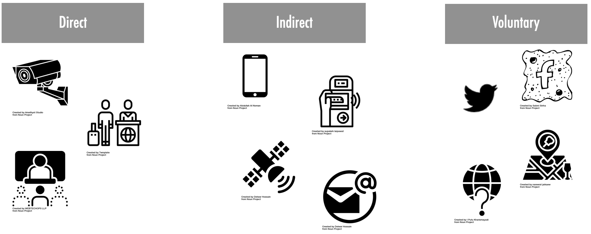

2 Introducing Population Science
2.1 Introduction
Population science sits at the intersection between population studies and data science. As the general field of population studies, population science seeks to quantitatively understand human populations, including the three key demographic processes of population change, namely fertility, mortality and migration. It seeks to understand the size, structure, temporal changes and spatial distribution of populations, and the drivers and impacts that underpin their variations and regularities. It considers the ways in which structural social, economic, political and environmental factors shape population trends. What is unique about population science is that it seeks to leverage on the ongoing digital revolution characterised by technological advances in computer processing, digitalised information storage capacity and digital connectivity (Hilbert and López 2011).
The digital revolution ushered in the 1990s has unleashed a data revolution. Technological advances in computational power, storage and digital network platforms have enabled the emergence of “Big Data” or “digital footprint data”. These technological developments have enabled the production, processing, analysis and storage of large volumes of digital data. Analysing 1986-2007 data, Hilbert and López (2011) estimated that the world has already passed the point at which more data were being collected than could be physically stored. They estimated that the global general-purpose computing capacity grew at an annual rate of 58 percent between 1986 and 2007, exceeding that of global storage capacity (23 percent). We can now digitally captured and generated data that previously could not easily be recorded and stored.
The unprecedented amount of information that we can now capture through digital technology offers unique opportunities to advance our understanding of micro human behaviour (e.g. individual-level decision making, preferences and choices) and macro population processes (e.g. structural population processes and trends). Digital footprint data offer a continuous flow of information to capture human population dynamics at unprecedentedly fine spatial and temporal resolution in real or near real-time comprising entire social systems. We can capture and study micro individual behaviours such as online time use, purchasing behaviour, visitation patterns and public opinion from data sources, such as mobile phones, social media and retail website platforms. These behaviours can also be aggregated to shed light into macro structural processes and trends, such as urban mobility, consumer demand, transport usage, population ageing and decline. Fundamentally digital footprint data thus have the potential to become a key pillar informing and supporting decision making. They can inform business to increase sales revenue, football clubs to improve team performance, and governments to tackle major societal issues, such as the COVID-19 pandemic and global warming, influencing policy, practice and governance structures.
Yet, the use of digital footprint data also poses major conceptual, methodological and ethical challenges (Rowe 2021). It is these challenges that motivated this module. Digital footprint data are a by-product of an administrative process or service, and it is not purposely collected for research. Turning raw digital footprint data into actionable, usable information thus requires a unique combination of technical computational expertise and subject-specific knowledge. Traditionally university programmes have tended to focus on providing technical training, such as statistics or on specific knowledge subjects. But they are rarely found as a single coherent package. This module aims to fills this gap by offering training in the use of digital footprint data, and sophisticated methodological approaches (including machine learning, artificial intelligence, network science and statistical methods) to tackle important population issues, such as population segmenting, decline and mobility. Access to digital footprint data are highly variable; hence, we do not focus on this here. However, we encourage users of this book to read a report put together by the Joint Research Centre (2022) identifying and discussing key data sources focusing population processes.
The name of this module Population Science reflects the inclusive and interdisciplinary perspective we hope to capture. The data revolution has led to the emergence of a range of sub-disciplines, seeking to leverage on the use of digital footprint data to study human behaviour and population processes. These emerging sub-disciplines have tended to focus on discipline-specific issues such as digital demography (Kashyap et al. 2022), or particular methodological approaches, such as the use of networks principles in computational social sciences (Lazer et al. 2009). Population science seeks to integrate these perspectives and provide a fertile framework for critique, collaboration and co-creation across these emerging areas of scholarship in the study of human population. And, of course, take a spatial perspective adopting geographic data science approaches (Singleton and Arribas-Bel 2019).
Specifically, this chapter aims to discuss key opportunities and challenges of digital footprint data to analyse human population dynamics. We place a particular focus on the challenges relating to privacy, bias and privacy issues. The chapter starts by defining digital footprint data before discussing the key opportunities offered by these data and the challenges they pose.
2.2 Defining digital footprint data
We define digital footprint data as:
the data recorded by digital technology resulting from the interactions of people among themselves or with their social and physical environment, and they can take the form of images, video, text and numbers.
Data footprint data are distinctive features in their volume, velocity, variety, exhaustiveness, resolution, relational nature and flexibility (Kitchin 2014). They can take different forms. Traditional data used to be mostly numeric. Digital footprint data has facilitated the collection, storage and analysis of text (e.g. Twitter posts), image (e.g. Instagram photos) and video (e.g. CCTV footage) data.
Multiple digital systems contribute to the storage and generation of digital footprint data. Kitchin (2014) identified three broad systems directed, automated and volunteered systems. Directed systems comprise digital administrative systems operated by a human recording data on places or people e.g. immigration control, biometric scanning and health records. Automated systems involve digital systems which automatically and autonomously record and process data with little human intervention e.g. mobile phone applications, electronic smartcard ticketing, energy smart meter and traffic sensors. Volunteered systems involve digital spaces in which humans contribute data through interactions on social media platforms (e.g. Twitter and Facebook) or crowdsourcing (e.g. OpenStreetMap and Wikipedia).

2.3 Opportunities of digital footprint data
Digital footprint data offer unique opportunities for the analysis of human population patterns. As Rowe (2021) argues, digital footprint data offer three key promises in relation to traditional data sources, such as surveys and censuses. They generally provide greater spatio-temporal granularity, wider coverage and timeliness.
Digital footprint data offer high geographic and temporal granularity. Most digital footprint data are time-stamped and geographically referenced with high precision. Digital technology, such as mobile phone and geographical positioning systems enables the generation of a continuous steams of time-stamped location data. Such information thus provides an opportunity to trace and enhance our understanding human populations over highly granular spatial scales and time intervals, going beyond the static representation afforded by most traditional data sources. Spatial human interactions, and how people use and are influenced by their environment, can be analysed in a temporally dynamic way.
Digital footprint data provide extensive coverage. Contrasting to traditional random sampling, digital footprint data promise information on universal or near-universal population or geographical systems. Social media platforms, such as Twitter generate data to capture the entire universe of Twitter users. Satellite technology produces imagery snapshots to composite a representation of the Earth. Electronic smartcard ticketing systems produce information to capture the population of users in the system. Because the information is typically consistently collected and storage, the coverage of digital footprint data offer the potential to study human behaviour of entire systems at a global scale based on harmonised definitions, which is rarely possible using traditional data sources.
Digital footprint data are generated in real-time. Unlike traditional systems of data collection and release, digital footprint data can be streamed continuously in real- or near real-time. Commercial transactions are generally recorded on bank ledgers as bank card payments occur at retail shops. Individual mobile phone’s location are captured as applications ping cellular antennas. Such information offer an opportunity to monitor and response to rapidly evolving situations, such as the COVID-19 pandemic (Green, Pollock, and Rowe 2021), natural disasters (Rowe 2022) and conflicts (Rowe, Neville, and González-Leonardo 2022).
We also loudly and clearly argue that while digital footprint data should be seen as a key asset to support government and business decision making processes, they should not be considered at the expenses of traditional data sources. Digital footprint data and traditional data sources should be used to complement each another. As indicated earlier, digital footprint data are the by-product of administrative processes or services. They were not designed with the aim of doing research. They require considerable work of data re-engineering to re-purpose them and turn them into an analysis-ready data product that can be used for further analysis (Arribas-Bel et al. 2021). Yet, as we will discuss below significant challenges remain. As the saying goes “all data are dirty, but some data are useful”. This quote used in the data science community to convey the idea that data are often imperfect, but they can still be used to gain valuable insights. Our message is that digital footprint data and traditional data sources should be triangulated to leverage on their strengths and mitigate their weaknesses.
2.4 Challenges of digital footprint data
Digital footprint data also impose key conceptual, methodological and ethical challenges. In this section, we provide a brief explanation of challenges in these areas, focusing particularly on issues around biases, privacy, ethics and new methods. We focus on these issues because they are of practical importance and probably of most interest to the readers of this book. Excellent discussions have been written and, if you are interested in learning more about the challenges relating to digital footprint data, we recommend Kitchin (2014), Cesare et al. (2018), Lazer et al. (2020) and Rowe (2021).
2.4.1 Conceptual challenges
Conceptually, the emergence of digital footprint data has led to the rethinking and questioning of existing theoretical social science approaches (Franklin 2022). On the one hand, digital footprint data provide an opportunity to explore existing theories or hypotheses through different lens and test the consistency of existing beliefs. For example, economics theories discuss the existence of temporal and spatial equilibrium. Resulting hypotheses are generally tested through mathematical theoretical models or empirical analyses relying on temporally static data. The existence of equilibrium has thus remained hard to assess. Digital footprint data provide an opportunity to empirically test temporal and spatial equilibrium ideas based on suitable temporally dynamic data. They can enable the testing of cause and impact hypotheses, rather than only focusing on static associations.
On the other hand, digital footprint data sparked new questions. Digital footprint data provide data on previously unmeasured activities. Data now capture activities that were previously difficult to quantify, such as personal communications, social networks, search and information gathering, and location data. These data offer an opportunity to develop new questions expanding existing theories by looking inside the “black box” of households, organisations and markets. They may also open the door to developing entirely new questions such as the role of digital technology in shaping human behaviour, and the role of artificial intelligence on productivity and financial markets.
2.4.2 Methodological challenges
Methodologically, the need for a wide and new set of digital skills and expertise to handle, store and analyse large volumes of data is a key challenge. As indicated earlier, digital footprint data are not created for research purposes. They need to be reengineered for research. Large streams of digital footprint data cannot be stored on local memory. They can rarely be read as a single unit on a local computer and may involve performing the same task numerous times in regular basis, requiring therefore large storage, computational capacity and computer science expertise. The manipulation and storage of digital footprint data often require technical expertise in data management systems, such as SQL, Google Cloud Storage and Amazon S3, as well as in efficient computing involving expertise in distributed computing systems and parallelisation frameworks. The analysis and modelling of digital footprint data may entail competencies in the application of machine learning and artificial intelligence. While these competencies generally form part of a computer science programme, they are rarely taught in an integrated framework focusing on addressing societal or business challenges relating to human populations - where the key focus is their application.
An additional methodological challenge is the presence of biases in digital footprint data. Digital footprint data are representative of a specific segment of the population but little is known which segments and how their representation varies across data sets and digital technology. Digital footprint data may comprise multiple sources of biases. They may reflect differences in the use of a digital device (e.g. mobile phone) and/or a piece of digital technology (e.g. a mobile phone application) Schlosser et al. (2021) . They may also reflect differences in frequency in the use of digital technology (e.g. number of times an individual uses a mobile phone application) - and this frequency may in turn reflect differences in algorithmic decisions embedded in digital platforms, such as suggesting content based on prior interactions to increase engagement with a given mobile phone application. Some work has been done on assessing biases as well as developing approaches to mitigate their influence Ribeiro, Benevenuto, and Zagheni (2020).
2.4.3 Ethical challenges
Privacy represents a major ethical challenge. Digital footprint data are highly sensitive, and hence, anonymisation and disclosure control are required. Individual records must be anonymised so they are not identifiable. The high degree of granularity and personal information of these records may and have been used in ethically questionable ways; for example, Cambridge Analytica used information of Facebook users to segment the population and target politically motivated content (Cadwalladr and Graham-Harrison 2018). Anonymising information, however, imposes a key challenge as there is a trade-off between accuracy and privacy (Petti and Flaxman 2020). Anonymisation may reduce the usability of data. The greater the degree of privacy, the lower is the degree of accuracy of the resulting data and vice versa. Identifying the optimal point balancing the privacy-accuracy trade-off is the key challenge. If doing incorrectly, we could end up drawing inferences that do not reflect the actual population processes displayed in the data, or have artificially been encoded in the data through noise or reshuffling. The application of data differential privacy to the US census provides a recent good example of this challenge. An emblematic case is New York’s Liberty Island which has no resident population, but official US census reported 48 residents which was the result of adding statistical noise to the data, in order to enhance privacy.
2.5 Conclusion
Digital footprint data present unique oppotunites to enhance our understanding of population processes and support individual, business and government decisions to improve targeted processes and outcomes. Businesses have used digital footprint data to segment their consumer populations and improve their targeting of marketing content, products and ultimately increase sales and revenue (Dolega, Rowe, and Branagan 2021). Governments and health care institutions, particularly during the COVID-19 have leverage digital footprint data to monitor the spread of the pandemic and develop appropriate mitigation responses (Green, Pollock, and Rowe 2021). However, the use of digital footprint data poses major conceptual, methodological and ethical challenges - which need to be overcome to unleash their full potential. The aim of this book is to address of the key methodological challenges. In particular, this book seeks to provide applied training on the practical application of commonly used machine learning and artificial intelligence approaches to leverage on digital footprint data in the understanding of human behaviour and population processes.